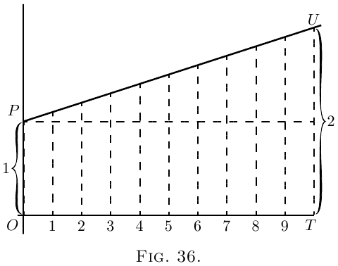
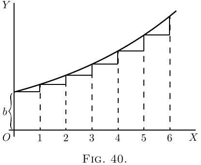
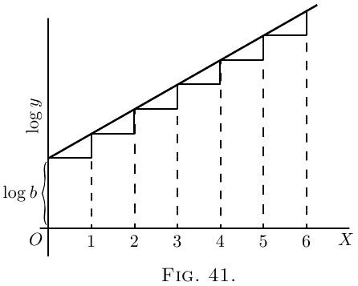

关于真正的复利和有机增长定律
假设一个量以这样一种方式增长，即它在给定时间内增长的增量始终与其自身的大小成正比。 这类似于以某个固定利率计算货币利息的过程；因为资本越大，在给定时间内产生的利息就越多。
现在我们必须在计算中清楚地区分两种情况，一种情况是按算术书中所说的“单利”计算，另一种情况是按它们所说的“复利”计算。 因为在前一种情况下，本金保持不变，而在后一种情况下，利息被添加到本金中，因此本金通过连续增加而增加。
按单利计算。 考虑一个具体的例子。 假设开始时的本金为 100 英镑，年利率为 10%。 那么，资本所有者每年的增量将为 10 英镑。 让他每年都取利息，并将其存放在袜子里或锁在保险箱中。 然后，如果他持续 10 年，到那时他将收到 10 个增量，每个增量为 10 英镑，即 100 英镑，加上原来的 100 英镑，总共 200 英镑。 他的财产将在 10 年内翻倍。 如果利率为 5%，他必须储蓄 20 年才能使财产翻倍。 如果只有 2%，他必须储蓄 50 年。 很容易看出，如果每年利息的价值是本金的 $\dfrac{1}{n}$，那么他必须继续储蓄 $n$ 年才能使财产翻倍。
或者，如果 $y$ 是原始本金，每年的利息是 $\dfrac{y}{n}$，那么到 $n$ 年结束时，他的财产将是
\[
y + n\dfrac{y}{n} = 2y.
\]
(2) 按复利计算。 和以前一样，让所有者
从 100 英镑的本金开始，以每年 10% 的利率赚取利息； 但是，不要储存利息，而是每年将其添加到本金中，这样本金逐年增加。 然后，一年结束时，本金将增长到 110 英镑； 而在第二年（仍然是 10%）这将赚取 11 英镑的利息。 他将以 121 英镑开始第三年，利息将为 12 英镑 2 先令； 因此，他将以 133 英镑 2 先令开始第四年，以此类推。 很容易计算出来，到十年结束时，总资本将增长到 259 英镑 7 先令 6 便士。 事实上，我们看到，在每一年结束时，每一英镑都会赚取 $\tfrac{1}{10}$ 英镑，因此，如果总是加上这一部分，每一年都会将资本乘以 $\tfrac{11}{10}$； 如果持续十年（将乘以这个因子十次），则将原始资本乘以 2.59374。 让我们把它写成符号。 将 $y_0$ 作为原始资本；将 $\dfrac{1}{n}$ 作为每次 $n$ 次操作中添加的部分； 将 $y_n$ 作为第 $n$ 次操作结束时资本的价值。 然后
\[
y_n = y_0\left(1 + \frac{1}{n}\right)^n.
\]
但是，这种每年计算一次复利的方式实际上并不公平； 因为即使在第一年，100 英镑也应该在增长。 到半年结束时，它应该至少是 105 英镑，如果在第二年的下半年以 105 英镑为基础计算利息，那就更公平了。 这相当于称之为每半年 5% 的利率；因此，经过 20 次操作，每次操作都将资本乘以 $\tfrac{21}{20}$。 如果以这种方式计算，到十年结束时，资本将增长到 265 英镑 6 先令 7 便士；因为
\[
(1 + \tfrac{1}{20})^{20} = 2.653.
\]
但是，即使这样，这个过程仍然不太公平； 因为到第一个月结束时，会赚取一些利息；半年结算假设资本在一段时间内保持静止六个月。 假设我们将一年分成 10 个部分，并对每十分之一年计算 1% 的利息。 我们现在有 100 次操作持续十年以上；或
\[
y_n = £100 \left( 1 + \tfrac{1}{100} \right)^{100};
\]
计算结果为
270 英镑 9 先令 7$\frac{1}{2}$ 便士。
即使这也不是最终结果。 将十年分成 1000 个周期，每个周期为 $\frac{1}{100}$ 年； 每个周期的利息为 $\frac{1}{10}$%；然后
\[
y_n = £100 \left( 1 + \tfrac{1}{1000} \right)^{1000};
\]
计算结果为
271 英镑 13 先令 10 便士。
更精细地计算，将十年分成 10,000 个部分，每个部分为 $\frac{1}{1000}$ 年，利息为 1% 的 $\frac{1}{100}$。 然后
\[
y_n = £100 \left( 1 + \tfrac{1}{10,000} \right)^{10,000}
\]
相当于
271 英镑 16 先令 3$\frac{1}{2}$ 便士。
最后，可以看出我们试图找到的实际上是表达式 $\left(1 + \dfrac{1}{n}\right)^n$ 的最终值，正如我们所看到的，它大于 $2$； 并且，随着我们取越来越大的 $n$，它越来越接近一个特定的极限值。无论你将 $n$ 设置得有多大，此表达式的值都越来越接近数字
\[
2.71828\ldots
\]
一个永远不会忘记的数字。
让我们用几何图示说明这些事情。 在图 36 中，$OP$ 代表原始值。 $OT$ 是值增长的整个时间。 它分为 10 个周期，每个周期都有一个相等的向上步骤。 这里 $\dfrac{dy}{dx}$ 是一个常数； 如果每个向上步骤都是原始 $OP$ 的 $\frac{1}{10}$，那么经过 10 个这样的步骤，高度就会翻倍。 如果我们采取 20 个步骤，每个步骤的高度是所示高度的一半，那么最后的高度仍然会正好翻倍。 或者 $n$ 个这样的步骤，每个步骤是原始高度 $OP$ 的 $\dfrac{1}{n}$，就足以使高度翻倍。 这是单利的情况。 这里是 1 增长到 2 的过程。

在图 37 中，我们有几何级数对应的图示。 每个连续的纵坐标都应该是前一个纵坐标的 $1 + \dfrac{1}{n}$，即 $\dfrac{n+1}{n}$ 倍高。 向上步骤不相等，因为现在每个向上步骤都是曲线在该部分的纵坐标的 $\dfrac{1}{n}$。 如果我们只有 10 个步骤，乘以因子 $\left(1 + \frac{1}{10} \right)$，那么最终的总数将是
$(1 + \tfrac{1}{10})^{10}$ 或原始 1 的 2.594 倍。 但是，如果我们只取足够大的 $n$（以及对应的 $\dfrac{1}{n}$ 足够小），那么单位增长到的最终值 $\left(1 + \dfrac{1}{n}\right)^n$ 将为 2.71828。

Epsilon. 数学家们将希腊字母 $\epsilon$（发音为epsilon）作为这个神秘数字 2.7182818 等的符号。 所有小学生都知道希腊字母 $\pi$（称为pi）代表 3.141592 等； 但他们中有多少人知道 epsilon 的意思是 2.71828？ 然而，它是一个比 $\pi$ 更重要的数字！
那么，epsilon 是什么？
假设我们让 1 按单利增长到 2； 然后，如果以相同的名义利率和相同的时间，我们让 1 按真正的复利（而不是单利）增长，它将增长到值 epsilon。
有些人称这种在每时每刻与该时刻的大小成正比地增长的过程为对数增长率。 单位对数增长率是指在单位时间内使 1 增长到 2.718281 的速率。 它也可以称为有机增长率：因为有机增长的特征（在某些情况下）是有机体在给定时间内增加的量与有机体本身的大小成正比。
如果我们以 100% 作为单位利率，并以任何固定周期作为单位时间，那么让 1 以单位速率算术增长，在单位时间内，结果将是 2，而让 1 以单位速率对数增长，在相同的时间内，结果将是 2.71828...。
关于 Epsilon 的更多信息。 我们已经看到
我们需要知道当 $n$ 无限增大时，表达式 $\left(1 + \dfrac{1}{n}\right)^n$ 达到的值。 在算术上，这里列出了一系列值（任何人都可以借助普通的对数表计算出来），这些值是通过假设 $n = 2$、$n = 5$、$n = 10$ 等直到 $n = 10,000$ 得到的。
\begin{alignat*}{2}
&(1 + \tfrac{1}{2})^2 &&= 2.25. \\
&(1 + \tfrac{1}{5})^5 &&= 2.488. \\
&(1 + \tfrac{1}{10})^{10} &&= 2.594. \\
&(1 + \tfrac{1}{20})^{20} &&= 2.653. \\
&(1 + \tfrac{1}{100})^{100} &&= 2.705. \\
&(1 + \tfrac{1}{1000})^{1000} &&= 2.7169. \\
&(1 + \tfrac{1}{10,000})^{10,000} &&= 2.7181.
\end{alignat*}
但是，值得找到另一种计算这个非常重要数字的方法。
因此，我们将利用二项式定理，并以众所周知的方式展开表达式 $\left(1 + \dfrac{1}{n}\right)^n$。
二项式定理 给出了以下规则：
\begin{align*}
(a + b)^n &= a^n + n \dfrac{a^{n-1} b}{1!} + n(n - 1) \dfrac{a^{n-2} b^2}{2!} \\
& \phantom{= a^n\ } + n(n -1)(n - 2) \dfrac{a^{n-3} b^3}{3!} + \text{等等}. \\
\end{align*}
令 $a = 1$ 和 $b = \dfrac{1}{n}$，我们得到
\begin{align*}
\left(1 + \dfrac{1}{n}\right)^n
&= 1 + 1 + \dfrac{1}{2!} \left(\dfrac{n - 1}{n}\right) + \dfrac{1}{3!} \dfrac{(n - 1)(n - 2)}{n^2} \\
&\phantom{= 1 + 1\ } + \dfrac{1}{4!} \dfrac{(n - 1)(n - 2)(n - 3)}{n^3} + \text{等等}.
\end{align*}
现在，如果我们假设 $n$ 变得无限大，比如十亿，或十亿的十亿倍，那么 $n - 1$、$n - 2$ 和 $n - 3$ 等都将明显等于 $n$； 然后级数变为
\[
\epsilon = 1 + 1 + \dfrac{1}{2!} + \dfrac{1}{3!} + \dfrac{1}{4!} + \text{等等}\ldots
\]
通过将这个快速收敛的级数取为我们想要的项数，我们可以计算出任意精度之和。 以下是十项的计算过程：
| | $1.000000$ |
| 除以 1 | $1.000000$ |
| 除以 2 | $0.500000$ |
| 除以 3 | $0.166667$ |
| 除以 4 | $0.041667$ |
| 除以 5 | $0.008333$ |
| 除以 6 | $0.001389$ |
| 除以 7 | $0.000198$ |
| 除以 8 | $0.000025$ |
| 除以 9 | $0.000002$ |
| 总计 | $2.718281$ |
$\epsilon$ 与 1 不可通约，并且像 $\pi$ 一样是一个无休止的非循环小数。
指数级数。 我们还需要另一个级数。
让我们再次利用二项式定理，展开表达式 $\left(1 + \dfrac{1}{n}\right)^{nx}$，当我们将 $n$ 无限增大时，它与 $\epsilon^x$ 相同。
\begin{align*}
\epsilon^x
&= 1^{nx} + nx \frac{1^{nx-1} \left(\dfrac{1}{n}\right)}{1!}
+ nx(nx - 1) \frac{1^{nx - 2} \left(\dfrac{1}{n}\right)^2}{2!} \\
& \phantom{= 1^{nx}\ }
+ nx(nx - 1)(nx - 2) \frac{1^{nx-3} \left(\dfrac{1}{n}\right)^3}{3!}
+ \text{等等}.\\
&= 1 + x + \frac{1}{2!} · \frac{n^2x^2 - nx}{n^2}
+ \frac{1}{3!} · \frac{n^3x^3 - 3n^2x^2 + 2nx}{n^3} + \text{等等}. \\
&= 1 + x + \frac{x^2 -\dfrac{x}{n}}{2!}
+ \frac{x^3 - \dfrac{3x^2}{n} + \dfrac{2x}{n^2}}{3!} + \text{等等}.
\end{align*}
但是，当 $n$ 无限增大时，这简化为以下形式：
\[
\epsilon^x
= 1 + x + \frac{x^2}{2!} + \frac{x^3}{3!} + \frac{x^4}{4!} + \text{等等}\dots
\]
此级数称为指数级数。
$\epsilon$ 被认为重要的最大原因是 $\epsilon^x$ 具有任何其他 $x$ 函数都不具备的属性，即当你对它求导时，它的值保持不变； 或者，换句话说，它的微分系数与它本身相同。 这可以通过对其关于 $x$ 进行微分来立即看出，如下所示：
\begin{align*}
\frac{d(\epsilon^x)}{dx}
&= 0 + 1 + \frac{2x}{1 · 2} + \frac{3x^2}{1 · 2 · 3} + \frac{4x^3}{1 · 2 · 3 · 4} \\
&\phantom{= 0 + 1 + \frac{2x}{1 · 2} + \frac{3x^2}{1 · 2 · 3}\ } + \frac{5x^4}{1 · 2 · 3 · 4 · 5} + \text{等等}. \\
或者
&= 1 + x + \frac{x^2}{1 · 2} + \frac{x^3}{1 · 2 · 3} + \frac{x^4}{1 · 2 · 3 · 4} + \text{等等},
\end{align*}
这与原始级数完全相同。
现在我们可以用另一种方式进行工作，并说：开始吧； 让我们找出一个 $x$ 的函数，使其微分系数与自身相同。 或者，是否存在任何只涉及 $x$ 的幂的表达式，它不会因微分而改变？ 因此； 让我们假设一个一般表达式
\begin{align*}
y &= A + Bx + Cx^2 + Dx^3 + Ex^4 + \text{等等}.,\\
\end{align*}
（其中系数 $A$、$B$、$C$ 等需要确定），并对其求导。
\begin{align*}
\dfrac{dy}{dx} &= B + 2Cx + 3Dx^2 + 4Ex^3 + \text{等等}.
\end{align*}
现在，如果这个新表达式真的要和它导出的表达式相同，那么很明显 $A$ 必须 $=B$； $C=\dfrac{B}{2}=\dfrac{A}{1· 2}$；$D = \dfrac{C}{3} = \dfrac{A}{1 · 2 · 3}$； $E = \dfrac{D}{4} = \dfrac{A}{1 · 2 · 3 · 4}$，等等。
因此，变化的规律是
\[
y = A\left(1 + \dfrac{x}{1} + \dfrac{x^2}{1 · 2} + \dfrac{x^3}{1 · 2 · 3} + \dfrac{x^4}{1 · 2 · 3 · 4} + \text{等等}.\right).
\]
现在，为了进一步简化，如果我们取 $A = 1$，则得到
\[
y = 1 + \dfrac{x}{1} + \dfrac{x^2}{1 · 2} + \dfrac{x^3}{1 · 2 · 3} + \dfrac{x^4}{1 · 2 · 3 · 4} + \text{等等}.
\]
对它求任意次数的导数将始终给出相同的级数。
现在，如果我们取 $A=1$ 的特定情况，并计算级数，我们将简单地得到
\begin{align*}
\text{当 } x &= 1,\quad & y &= 2.718281 \text{ 等等}； & \text{即， } y &= \epsilon; \\
\text{当 } x &= 2,\quad & y &=(2.718281 \text{ 等等})^2； & \text{即， } y &= \epsilon^2; \\
\text{当 } x &= 3,\quad & y &=(2.718281 \text{ 等等})^3； & \text{即， } y &= \epsilon^3;
\end{align*}
因此
\[
\text{当 } x=x,\quad y=(2.718281 \text{ 等等})^x;\quad\text{即， } y=\epsilon^x,
\]
最终证明
\[
\epsilon^x = 1 + \dfrac{x}{1} + \dfrac{x^2}{1·2} + \dfrac{x^3}{1· 2· 3} + \dfrac{x^4}{1· 2· 3· 4} + \text{等等}.
\]
[注意。–如何读取指数 。 为了方便那些手头没有导师的人，可能有必要说明 $\epsilon^x$ 读作 “epsilon 的 eksth 次方”； 或有些人将其读作“指数 eks”。 因此，$\epsilon^{pt}$ 读作 “epsilon 的 pee-teeth 次方”或 “指数 pee tee”。 选取一些类似的表达式：–因此，$\epsilon^{-2}$ 读作 “epsilon 的负 2 次方”或 “指数负 2”。 $\epsilon^{-ax}$ 读作 “epsilon 的负 ay-eksth 次方”或 “指数负 ay-eks”。]
当然，如果关于 $y$ 进行微分，$\epsilon^y$ 保持不变。 同样，$\epsilon^{ax}$ 等于 $(\epsilon^a)^x$，当关于 $x$ 进行微分时，将为 $a\epsilon^{ax}$，因为 $a$ 是常数。
自然对数或纳皮尔对数。
$\epsilon$ 很重要的另一个原因是纳皮尔（对数的发明者）将其作为他的系统的基础。 如果 $y$ 是 $\epsilon^x$ 的值，则 $x$ 是 $y$ 的对数，以 $\epsilon$ 为底。 或者，如果
\begin{align*}
y &= \epsilon^x, \\
\text{那么}\; x &= \log_\epsilon y.
\end{align*}
在图 38 和图 39 中绘制的两个曲线表示这些方程式。
计算出的点是：
对于图 38：
| $x$ | $0$ | $0.5$ | $1$ | $1.5$ | $2$ |
| $y$ | $1$ | $1.65$ | $2.71$ | $4.50$ | $7.39$ |

对于图 39：
| $y$ | $1$ | $2$ | $3$ | $4$ | $8$ |
| $x$ | $0$ | $0.69$ | $1.10$ | $1.39$ | $2.08$ |

可以看出，虽然计算得出的点不同，但结果是相同的。 这两个方程实际上意味着同一件事。
由于许多使用以 10 为底而不是以 $\epsilon$ 为底计算的普通对数的人不熟悉“自然”对数，因此可能有必要谈谈它们。 加对数给出乘积对数的普通规则仍然有效；或
\[
\log_\epsilon a + \log_\epsilon b = \log_\epsilon ab.
\]
幂的规则也有效；
\[
n × \log_\epsilon a = \log_\epsilon a^n.
\]
但是由于 10 不再是基础，因此不能仅通过将 2 或 3 添加到指数来乘以 100 或 1000。 可以简单地通过乘以 0.4343 将自然对数转换为普通对数；或
\begin{align*}
\log_{10} x &= 0.4343 × \log_{\epsilon} x, \\
\text{反之，}\;
\log_{\epsilon} x &= 2.3026 × \log_{10} x.
\end{align*}
“纳皮尔对数”的有用表格
（也称为自然对数或双曲对数）
| 数字 |
$\log_{\epsilon}$ |
|
数字 |
$\log_{\epsilon}$ |
| $1 $ | $0.0000$ | | $6$ | $1.7918$ |
| $1.1$ | $0.0953$ | | $7$ | $1.9459$ |
| $1.2$ | $0.1823$ | | $8$ | $2.0794$ |
| $1.5$ | $0.4055$ | | $9$ | $2.1972$ |
| $1.7$ | $0.5306$ | | $10$ | $2.3026$ |
| $2.0$ | $0.6931$ | | $20$ | $2.9957$ |
| $2.2$ | $0.7885$ | | $50$ | $3.9120$ |
| $2.5$ | $0.9163$ | | $100$ | $4.6052$ |
| $2.7$ | $0.9933$ | | $200$ | $5.2983$ |
| $2.8$ | $1.0296$ | | $500$ | $6.2146$ |
| $3.0$ | $1.0986$ | | $1000$ | $6.9078$ |
| $3.5$ | $1.2528$ | | $2000$ | $7.6009$ |
| $4.0$ | $1.3863$ | | $5000$ | $8.5172$ |
| $4.5$ | $1.5041$ | | $10 000$ | $9.2103$ |
| $5.0$ | $1.6094$ | | $20 000$ | $9.9035$ |
指数和对数方程。
现在，让我们尝试对包含对数或指数的某些表达式进行微分。
取方程：
\[
y = \log_\epsilon x.
\]
首先将其转换为
\[
\epsilon^y = x,
\]
由此，由于 $\epsilon^y$ 关于 $y$ 的微分是原始函数保持不变（请参见此处），
\[
\frac{dx}{dy} = \epsilon^y,
\]
并且，从反函数还原到原始函数，
\[
\frac{dy}{dx}
= \frac{1}{\ \dfrac{dx}{dy}\ }
= \frac{1}{\epsilon^y}
= \frac{1}{x}.
\]
现在这是一个非常奇特的结果。 它可以写成
\[
\frac{d(\log_\epsilon x)}{dx} = x^{-1}.
\]
请注意，$x^{-1}$ 是我们永远无法通过对幂进行微分的规则得到的结果。 该规则是将幂乘以，并将幂减 1。 因此，对 $x^3$ 求导得到 $3x^2$； 对 $x^2$ 求导得到 $2x^1$。 但是对 $x^0$ 求导不会得到 $x^{-1}$ 或 $0 × x^{-1}$，因为 $x^0$ 本身 $= 1$，并且是一个常数。 当我们到达关于积分的章节时，我们将不得不回到这个奇特的事实，即对 $\log_\epsilon x$ 求导得到 $\dfrac{1}{x}$。
现在，尝试微分
\begin{align*}
y &= \log_\epsilon(x+a),\\
\text{即}\; \epsilon^y &= x+a;
\end{align*}
我们有 $\dfrac{d(x+a)}{dy} = \epsilon^y$，因为 $\epsilon^y$ 的微分仍然是 $\epsilon^y$。
这给出
\begin{align*}
\frac{dx}{dy} &= \epsilon^y = x+a; \\
\end{align*}
因此，回到原始函数，
我们得到
\begin{align*}
\frac{dy}{dx} &= \frac{1}{\;\dfrac{dx}{dy}\;} = \frac{1}{x+a}.
\end{align*}
接下来尝试
\begin{align*}
y &= \log_{10} x.
\end{align*}
首先乘以模数 0.4343 将其转换为自然对数。 这给了我们
\begin{align*}
y &= 0.4343 \log_\epsilon x; \\
\text{因此}\;
\frac{dy}{dx} &= \frac{0.4343}{x}.
\end{align*}
下一件事就没那么简单了。 尝试这个：
\[
y = a^x.
\]
两边取对数，得到
\begin{align*}
\log_\epsilon y &= x \log_\epsilon a, \\
\text{ 或}\;
x = \frac{\log_\epsilon y}{\log_\epsilon a}
&= \frac{1}{\log_\epsilon a} × \log_\epsilon y.
\end{align*}
由于 $\dfrac{1}{\log_\epsilon a}$ 是一个常数，我们得到
\[
\frac{dx}{dy}
= \frac{1}{\log_\epsilon a} × \frac{1}{y}
= \frac{1}{a^x × \log_\epsilon a};
\]
因此，返回到原始函数。
\[
\frac{dy}{dx} = \frac{1}{\;\dfrac{dx}{dy}\;} = a^x × \log_\epsilon a.
\]
我们看到，由于
\[
\frac{dx}{dy} × \frac{dy}{dx} =1\quad\text{且}\quad
\frac{dx}{dy} = \frac{1}{y} × \frac{1}{\log_\epsilon a},\quad
\frac{1}{y} × \frac{dy}{dx} = \log_\epsilon a.
\]
我们将发现，每当我们有一个诸如 $\log_\epsilon y =$ $x$ 的函数之类的表达式时，我们总是有 $\dfrac{1}{y}\, \dfrac{dy}{dx} =$ $x$ 的函数的微分系数，因此我们可以立即写出，从
$\log_\epsilon y = x \log_\epsilon a$,
\[
\frac{1}{y}\, \frac{dy}{dx}
= \log_\epsilon a\quad\text{并且}\quad
\frac{dy}{dx} = a^x \log_\epsilon a.
\]
现在让我们尝试更多示例。
例子
(1) $y=\epsilon^{-ax}$。 令 $-ax=z$； 然后 $y=\epsilon^z$。
\[
\frac{dy}{dz} = \epsilon^z;\quad
\frac{dz}{dx} = -a;\quad\text{因此}\quad
\frac{dy}{dx} = -a\epsilon^{-ax}.
\]
或者这样：
\[
\log_\epsilon y = -ax;\quad
\frac{1}{y}\, \frac{dy}{dx} = -a;\quad
\frac{dy}{dx} = -ay = -a\epsilon^{-ax}.
\]
(2) $y=\epsilon^{\frac{x^2}{3}}$。 令 $\dfrac{x^2}{3}=z$； 然后 $y=\epsilon^z$。
\[
\frac{dy}{dz} = \epsilon^z;\quad
\frac{dz}{dx} = \frac{2x}{3};\quad
\frac{dy}{dx} = \frac{2x}{3}\, \epsilon^{\frac{x^2}{3}}.
\]
或者这样：
\[
\log_\epsilon y = \frac{x^2}{3};\quad
\frac{1}{y}\, \frac{dy}{dx} = \frac{2x}{3};\quad
\frac{dy}{dx} = \frac{2x}{3}\, \epsilon^{\frac{x^2}{3}}.
\]
(3) $y = \epsilon^{\frac{2x}{x+1}}$。
\begin{align*}
\log_\epsilon y &= \frac{2x}{x+1},\quad
\frac{1}{y}\, \frac{dy}{dx} = \frac{2(x+1)-2x}{(x+1)^2}; \\
hence
\frac{dy}{dx} &= \frac{2}{(x+1)^2} \epsilon^{\frac{2x}{x+1}}.
\end{align*}
通过写 $\dfrac{2x}{x+1}=z$ 来检查。
(4) $y=\epsilon^{\sqrt{x^2+a}}$。 $\log_\epsilon y=(x^2+a)^{\frac{1}{2}}$。
\[
\frac{1}{y}\, \frac{dy}{dx} = \frac{x}{(x^2+a)^{\frac{1}{2}}}\quad\text{并且}\quad
\frac{dy}{dx} = \frac{x × \epsilon^{\sqrt{x^2+a}}}{(x^2+a)^{\frac{1}{2}}}.
\]
因为如果 $(x^2+a)^{\frac{1}{2}}=u$ 且 $x^2+a=v$，则 $u=v^{\frac{1}{2}}$，
\[
\frac{du}{dv} = \frac{1}{{2v}^{\frac{1}{2}}};\quad
\frac{dv}{dx} = 2x;\quad
\frac{du}{dx} = \frac{x}{(x^2+a)^{\frac{1}{2}}}.
\]
通过写 $\sqrt{x^2+a}=z$ 来检查。
(5) $y=\log(a+x^3)$。 令 $(a+x^3)=z$； 然后 $y=\log_\epsilon z$。
\[
\frac{dy}{dz} = \frac{1}{z};\quad
\frac{dz}{dx} = 3x^2;\quad\text{因此}\quad
\frac{dy}{dx} = \frac{3x^2}{a+x^3}.
\]
(6) $y=\log_\epsilon\{{3x^2+\sqrt{a+x^2}}\}$。 令 $3x^2 + \sqrt{a+x^2}=z$；
然后 $y=\log_\epsilon z$。
\begin{align*}
\frac{dy}{dz}
&= \frac{1}{z};\quad \frac{dz}{dx} = 6x + \frac{x}{\sqrt{x^2+a}}; \\
\frac{dy}{dx}
&= \frac{6x + \dfrac{x}{\sqrt{x^2+a}}}{3x^2 + \sqrt{a+x^2}}
= \frac{x(1 + 6\sqrt{x^2+a})}{(3x^2 + \sqrt{x^2+a}) \sqrt{x^2+a}}.
\end{align*}
(7) $y=(x+3)^2 \sqrt{x-2}$。
\begin{align*}
\log_\epsilon y
&= 2 \log_\epsilon(x+3)+ \tfrac{1}{2} \log_\epsilon(x-2). \\
\frac{1}{y}\, \frac{dy}{dx}
&= \frac{2}{(x+3)} + \frac{1}{2(x-2)}; \\
\frac{dy}{dx}
&= (x+3)^2 \sqrt{x-2} \left\{\frac{2}{x+3} + \frac{1}{2(x-2)}\right\}.
\end{align*}
(8) $y=(x^2+3)^3(x^3-2)^{\frac{2}{3}}$。
\begin{align*}
\log_\epsilon y
&= 3 \log_\epsilon(x^2+3) + \tfrac{2}{3} \log_\epsilon(x^3-2); \\
\frac{1}{y}\, \frac{dy}{dx}
&= 3 \frac{2x}{(x^2+3)} + \frac{2}{3} \frac{3x^2}{x^3-2}
= \frac{6x}{x^2+3} + \frac{2x^2}{x^3-2}.
\end{align*}
因为如果 $y=\log_\epsilon(x^2+3)$，令 $x^2+3=z$ 且 $u=\log_\epsilon z$。
\[
\frac{du}{dz} = \frac{1}{z};\quad
\frac{dz}{dx} = 2x;\quad
\frac{du}{dx} = \frac{2x}{x^2+3}.
\]
类似地，如果 $v=\log_\epsilon(x^3-2)$，则 $\dfrac{dv}{dx} = \dfrac{3x^2}{x^3-2}$ 并且
\[
\frac{dy}{dx}
= (x^2+3)^3(x^3-2)^{\frac{2}{3}}
\left\{ \frac{6x}{x^2+3} + \frac{2x^2}{x^3-2} \right\}.
\]
(9) $y=\dfrac{\sqrt[2]{x^2+a}}{\sqrt[3]{x^3-a}}$。
\begin{align*}
\log_\epsilon y
&= \frac{1}{2} \log_\epsilon(x^2+a) - \frac{1}{3} \log_\epsilon(x^3-a). \\
\frac{1}{y}\, \frac{dy}{dx}
&= \frac{1}{2}\, \frac{2x}{x^2+a} - \frac{1}{3}\, \frac{3x^2}{x^3-a}
= \frac{x}{x^2+a} - \frac{x^2}{x^3-a} \\
and
\frac{dy}{dx}
&= \frac{\sqrt[2]{x^2+a}}{\sqrt[3]{x^3-a}}
\left\{ \frac{x}{x^2+a} - \frac{x^2}{x^3-a} \right\}.
\end{align*}
(10) $y=\dfrac{1}{\log_\epsilon x}$
\[
\frac{dy}{dx}
= \frac{\log_\epsilon x × 0 - 1 × \dfrac{1}{x}}
{\log_\epsilon^2 x}
= -\frac{1}{x \log_\epsilon^2x}.
\]
(11) $y=\sqrt[3]{\log_\epsilon x} = (\log_\epsilon x)^{\frac{1}{3}}$。 令 $z=\log_\epsilon x$； $y=z^{\frac{1}{3}}$。
\[
\frac{dy}{dz} = \frac{1}{3} z^{-\frac{2}{3}};\quad
\frac{dz}{dx} = \frac{1}{x};\quad
\frac{dy}{dx} = \frac{1}{3x \sqrt[3]{\log_\epsilon^2 x}}.
\]
(12) $y=\left(\dfrac{1}{a^x}\right)^{ax}$。
\begin{align*}
\log y &= -ax \log a^{x} = -ax^{2} \cdot \log a.\\
\frac{1}{y} \frac{dy}{dx} &= -2ax \cdot \log a\\
\frac{dy}{dx} &= -2ax\left(\frac{1}{a^{x}}\right)^{ax} \cdot \log a = -2x a^{1-ax^{2}} \cdot \log a.
\end{align*}
现在尝试以下练习。
练习 XII
(1) 微分 $y=b(\epsilon^{ax} -\epsilon^{-ax})$。
(2) 求表达式 $u=at^2+2\log_\epsilon t$ 关于 $t$ 的微分系数。
(3) 如果 $y=n^t$，求 $\dfrac{d(\log_\epsilon y)}{dt}$。
(4) 证明如果 $y=\dfrac{1}{b}·\dfrac{a^{bx}}{\log_\epsilon a}$， $\dfrac{dy}{dx}=a^{bx}$。
(5) 如果 $w=pv^n$，求 $\dfrac{dw}{dv}$。
微分
(6) $y=\log_\epsilon x^n$。
(7) $y=3\epsilon^{-\frac{x}{x-1}}$。
(8) $y=(3x^2+1)\epsilon^{-5x}$。
(9) $y=\log_\epsilon(x^a+a)$。
(10) $y=(3x^2-1)(\sqrt{x}+1)$。
(11) $y=\dfrac{\log_\epsilon(x+3)}{x+3}$。
(12) $y=a^x × x^a$。
(13) 开尔文勋爵证明，通过海底电缆传输信号的速度取决于缆芯外径与所封闭的铜线直径之比。 如果这个比率称为 $y$，则每分钟可以发送的信号数 $s$ 可以用公式表示为
\[
s=ay^2 \log_\epsilon \frac{1}{y};
\]
其中 $a$ 是取决于材料的长度和质量的常数。 证明如果给定了这些，则当 $y=1 ÷ \sqrt{\epsilon}$ 时，$s$ 将达到最大值。
(14) 求以下表达式的最大值或最小值：
\[
y=x^3-\log_\epsilon x.
\]
(15) 微分 $y=\log_\epsilon(ax\epsilon^x)$。
(16) 微分 $y=(\log_\epsilon ax)^3$。
答案
(1) $ab(\epsilon^{ax} + \epsilon^{-ax})$。
(2) $2at + \dfrac{2}{t}$。
(3) $\log_\epsilon n$。
(5) $npv^{n-1}$。
(6) $\dfrac{n}{x}$。
(7) $\dfrac{3\epsilon^{- \frac{x}{x-1}}}{(x - 1)^2}$。
(8) $6x \epsilon^{-5x} - 5(3x^2 + 1)\epsilon^{-5x}$。
(9) $\dfrac{ax^{a-1}}{x^a + a}$。
(10) $\left(\dfrac{6x}{3x^2-1} + \dfrac{1}{2\left(\sqrt x + x\right)}\right) \left(3x^2-1\right)\left(\sqrt x + 1\right)$。
(11) $\dfrac{1 - \log_\epsilon \left(x + 3\right)}{\left(x + 3\right)^2}$。
(12) $a^x\left(ax^{a-1} + x^a \log_\epsilon a\right)$。
(14) 最小值：当 $x = 0.694$ 时，$y = 0.7$。
(15) $\dfrac{1 + x}{x}$。
(16) $\dfrac{3}{x} (\log_\epsilon ax)^2$。
对数曲线
让我们回到曲线，该曲线的连续纵坐标呈几何级数，例如由方程 $y=bp^x$ 表示的曲线。
通过令 $x=0$，我们可以看到 $b$ 是 $y$ 的初始高度。
然后，当
\[
x=1,\quad y=bp;\qquad
x=2,\quad y=bp^2;\qquad
x=3,\quad y=bp^3,\quad \text{等等}
\]
另外，我们看到 $p$ 是任意纵坐标的高度与前一个纵坐标的高度之间的比率的数值。 在图 40 中，我们将 $p$ 取为 $\frac{6}{5}$； 每个纵坐标都比前一个纵坐标高 $\frac{6}{5}$。


如果两个连续的纵坐标以恒定的比率相关，则它们的对数将具有恒定的差值； 因此，如果我们绘制一个新的曲线，图 41，以 $\log_\epsilon y$ 的值作为纵坐标，它将是一条以相等步长向上倾斜的直线。 事实上，从方程得出
\begin{align*}
\log_\epsilon y &= \log_\epsilon b + x · \log_\epsilon p, \\
\text{因此}\;
\log_\epsilon y &- \log_\epsilon b = x · \log_\epsilon p.
\end{align*}
现在，由于 $\log_\epsilon p$ 只是一个数字，并且可以写为 $\log_\epsilon p=a$，因此
\[
\log_\epsilon \frac{y}{b}=ax,
\]
并且该方程采用新形式
\[
y = b\epsilon^{ax}.
\]
下一页 →
主页 ↑